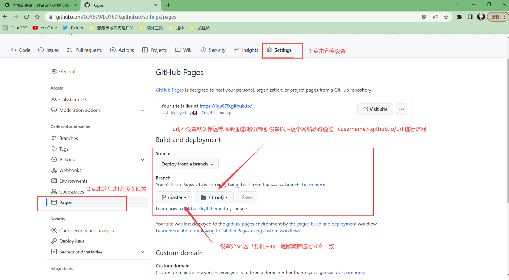
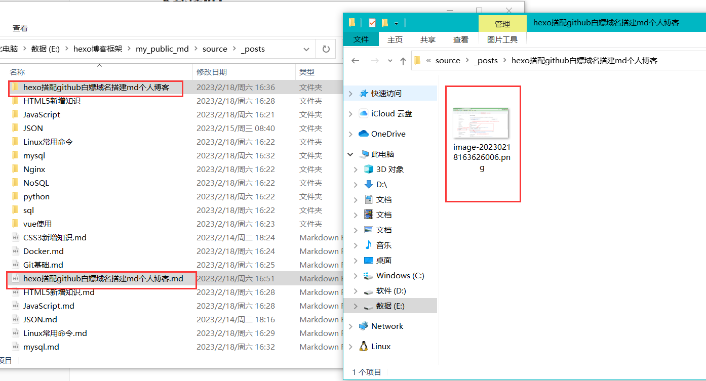
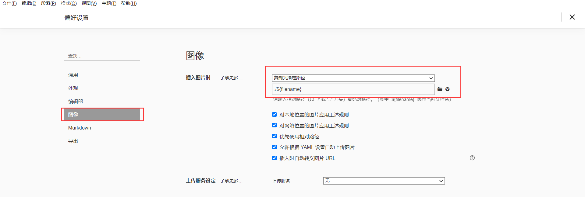

hexo搭配github白嫖域名搭建md个人博客
hexo搭配github白嫖域名搭建md个人博客
前置环境: git, node,更多具体参考Hexo官方文档, 有一个GitHub账号
Hexo建站,本地部署
参考官方文档快速上手:文档 | Hexo
想要快速上述可以参考这篇文章搭配官方文档食用,第一次使用Hexo搭建个人博客网站 - 简书 (jianshu.com),
根据自己的理解简单讲一下Hexo是什么, 这就是一个能够快速搭建博客的框架, 他可以把md文件(也就是markdown文件,一般我们写笔记都是用这个的) 转换成一个博客网站, 原理呢也很好理解, 就是把md文件解析转换成html+ css + js然后生成一个博客网站
也就是说Hexo会把你放在source目录的东西(例如图片,md文档等),解析打包到public目录下生成一个只含html css js的网站
==特别说明: 有关hexo的命令无特殊情况都需要在站点的根目录下执行,否则无法生效==
然后想记录一下自己遇到的几个坑和问题:
图片无法加载
这里我的解决办法是设置Hexo的这个配置项:
1 | # _config.yml |
然后还有一点要注意: 我们可以命令hexo new 文章名 来创建一篇文章,也可以直接把md文件复制粘贴到博客根目录\source\_posts目录下, 这样都可以创建文章,但是请注意: 如果你的文章名是带有中文的最好使用命令来创建一个和你想要创建的文件重名的,然后再把md文件复制过去覆盖掉用命令创建的文件 ,反正我这样亲测可用,但是还有一个问题就是: 即使是这样,首页展示的文章依旧无法加载图片(点击阅读更多进去还是正常显示没问题)
通过插件解决参考:
自动生成文章摘要
很多主题可以设置主页不展示整篇文章,而是展示很多文章,每篇文章只显示部分内容(比如摘要), 然后有个阅读阅读更多的功能 ,这种方式非常美观
例如Next主题, 相关设置文档在这里:Post Settings | NexT (theme-next.js.org)
因为我呢是有很多现成的md笔记的,但是我没有摘要的习惯, 但我又希望主页能够美观一点,就想着能不能根据文章开头自动生成摘要呢, 果然办法还是有的, 这里是原文: 解决Hexo博客的Next主题中阅读全文没有auto_excerpt的问题-阿里云开发者社区 (aliyun.com)
安装: npm install hexo-excerpt --save
在站点根目录的配置文件_config.yml添加配置:
1 | excerpt: |
常用命令:部署与调试
启动服务,进行调试
1 | hexo server |
这个是在本地启动服务器, 可以通过http://localhost:4000来访问hexo帮你生成的网站,这个命令一般是用来预览和调试效果,据官方文档所说这个是热启动 官网原话: Hexo 会监视文件变动并自动更新，您无须重启服务器。,但是有时候发现自己修改配置文件后发现自己没错确实又没效果可以尝试重启试试
打包, 部署
1 | hexo g -d |
这个是简写形式,这个命令主要用于后面讲的github pages 一键部署, 这个命令会检测所有文件, 发现有修改就会重新打包source目录重新生成public文件, 如果修改一些配置后发现没效果也可以试试这个命令
设置主题(看个人喜好)
主题的设置参考主题的官方文档即可, 根据自己喜欢进行相应设置, 也可以去找别的主题 :
github pages 上线发布
github pages 是github为我们的仓库提供了一个可以部署静态网站的功能,并且还能白嫖一个三级域名:用户名.github.io例如我的个人博客: https://lqy679.github.io/ , lqy679就是github的用户名
github设置
参考文章: 使用 GitHub Pages 搭建个人博客 - tfel-ypoc - 博客园 (cnblogs.com)
首先你要创建一个 GitHub 仓库, 仓库名应为: <当前github用户名>.github.io 仓库的可见性, 官方文档没做说明, 所以我选择了默认的 Public
注: 每个用户只能有一个名为<当前github用户名>.github.io的仓库,因为我们只能白嫖一个域名
创建完毕后别忘了进行仓库设置,打开pages功能

配置一键部署
参考: 部署 | Hexo
然后在Hexo站点目录执行:
1 | # 安装 hexo git 一键部署插件 |
编辑Hexo的配置文件,修改如下配置
1 | deploy: |
最后,执行如下命令一键部署!
1 | hexo g -d |
插件
本人博客用到的比较复杂的插件如下, 还有一些用到插件,例如搜素功能,但是在Next主题的官方文档中已经写得很清楚了就不再赘述
看板娘(卡哇伊小人)
通过我的不断探索,最终找到了两种设置看板娘的方法如下: 建议只选择一种即可,尽量不要两种都使用避免冲突
看板娘 Live 2D插件(配置简单)
安装
安装模块: npm install --save hexo-helper-live2d
配置
在Hexo的 _config.yml 文件或主题的 _config.yml 文件中添加配置.更多配置请参考官方文档
1 | live2d: |
下载并配置模型
使用 npm install 模型的包名 来安装,然后修改之前添加的配置文件将包名输入位于 _config.yml 的 model.use 中. 保存后重新运行部署即可生效
现有的模型:
live2d-widget-model-chitoselive2d-widget-model-epsilon2_1live2d-widget-model-gflive2d-widget-model-haru/01(usenpm install --save live2d-widget-model-haru)live2d-widget-model-haru/02(usenpm install --save live2d-widget-model-haru)live2d-widget-model-harutolive2d-widget-model-hibikilive2d-widget-model-hijikilive2d-widget-model-izumilive2d-widget-model-koharulive2d-widget-model-mikulive2d-widget-model-ni-jlive2d-widget-model-nicolive2d-widget-model-nietzschelive2d-widget-model-nipsilonlive2d-widget-model-nitolive2d-widget-model-shizukulive2d-widget-model-tororolive2d-widget-model-tsumikilive2d-widget-model-unitychanlive2d-widget-model-wankolive2d-widget-model-z16
看板娘模型预览
Live 2D所有模型展示图，看板娘图形合集 - 腾讯云开发者社区-腾讯云 (tencent.com)
会动的看板娘 (交互性强)
上述的使用官方插件中心的看板娘没有交互性,使用参考文章配置的可以个性化设置看板娘
注意一下, 如果你的主题是用npm下载的, 那么主题文件夹将不会在/themes/下,而是位于/node_modules/hexo-thems-主题名的目录下,自己适当替换一下参考文章中的目录,
1.下载:
下载 stevenjoezhang的项目，解压到本地博客目录的主题文件夹/source下，修改文件夹名为 live2d-widget（部署时记得把li ve2d-widget目录的.git删了），修改项目中的 autoload.js 文件:
1 | // const live2d_path = "https://fastly.jsdelivr.net/gh/stevenjoezhang/live2d-widget@latest/"; |
注: 如果你的hexo加了URL前缀，就将前缀加入live2d_path
2.修改api (被墙一定要修改)
同样是修改autoload.js文件,替换修改一下注释即可,
1 | initWidget({ |
3.引入:
每个主题引入不一样，具体请查询自己的主题文档，我用的是Next主题:
在主题文件夹/layout/_layout.njk文件,这其实是一个布局好的html文件, 引入一下js
1 | <script src="/live2d-widget/autoload.js"></script> |
4.启用Linve 2D
在**博客根目录的_config.yml**或者主题根目录的_config.主题名.yml添加如下:
1 | live2d: |
更多配置:
参考stevenjoezhang的仓库阅读REAME.md文件有详细的配置项 , 传送门
非Next主题或没有主题怎么使用
这里简述一下我的认为可行的解决方案:
将上述步骤中有关主题文件夹的操作,替换到博客根目录即可, 因为主题是基于Hexo结构拓展开发的,例如
直接下载到博客根目录的source, 引入操作在博客根目录的布局文件都是一样的
Meting-JS 音乐播放器
项目地址: metowolf/MetingJS: A powerful plugin connect APlayer and Meting (github.com)
由于Hexo插件中心的插件是通过文章内容插件标签来使用的, 无法全局使用,所以这里我采用了全局脚本生成, 通过Hexo配置的注入器实现
首先: 在Hexo的工作目录(也就是站点目录)下, 新建script目录, 随后在此目录新建js文件Meting.js内容如下:
设置播放器生效页面
如果不想让播放器在每个页面都生效, 请参考注入器（Injector） | Hexo , 自定进行相应的修改
1 | const css = hexo.extend.helper.get('css').bind(hexo); |
播放器参数设置
上述代码就是在每个页面加载完毕后, 添加如下的dom元素, 播放器是依靠引入这些元素实现的,如果需要修改播放器相关参数请参考如下表所示, 或者官方文档: metowolf/MetingJS: A powerful plugin connect APlayer and Meting (github.com), 对Meting.js文件15行的str变量做相应的修改
| 选项 | 默认值 | 描述 |
|---|---|---|
| id | 必须值 | 歌曲 id / 播放列表 id / 相册 id / 搜索关键字 |
| server | 必须值 | 音乐平台: netease, tencent, kugou, xiami, baidu |
| type | 必须值 | song, playlist, album, search, artist |
| fixed | false |
开启固定模式 |
| mini | false |
开启迷你模式 |
| loop | all |
列表循环模式：all, one,none |
| order | list |
列表播放模式： list, random |
| volume | 0.7 | 播放器音量 |
| lrctype | 0 | 歌词格式类型 |
| listfolded | false |
指定音乐播放列表是否折叠 |
| storagename | metingjs |
LocalStorage 中存储播放器设定的键名 |
| autoplay | true |
自动播放，移动端浏览器暂时不支持此功能 |
| mutex | true |
该选项开启时，如果同页面有其他 aplayer 播放，该播放器会暂停 |
| listmaxheight | 340px |
播放列表的最大长度 |
| preload | auto |
音乐文件预载入模式，可选项： none, metadata, auto |
| theme | #ad7a86 |
播放器风格色彩设置 |
1 | <link rel="stylesheet" href="https://cdn.jsdelivr.net/npm/aplayer/dist/APlayer.min.css"> |
网站连通本地笔记预览:解决图片本地或线上无法显示
上文已经解决了大部分问题, 但是还有一个小问题还有待改进, 就是图片无法实现在本地编辑器和生成的网站同时显示图片,这是因为Hexo解析生成网站路径的原因,参考自知乎大佬的文章,记录一下解决方案:
设置开启资源文件夹
首先,修改一下Hexo的配置文件,开启资源文件夹,官方文档具体描述: 资源文件夹 | Hexo
_config.yml文件, 修改为如下所示
1 | post_asset_folder: true |
下载插件:
进入你博客的根目录, 或者使用命令行切换到博客根目录, 执行npm install hexo-asset-image --save
下载失败尝试用管理员身份,
==注意!!! 由于这个插件年久失修,所以需要修改一下源码:==
- 进入你博客的根目录，然后下面顺序找到
index.js:node_modules–>hexo-asset-image–>index.js - 用VS Code 或者 记事本打开
index.js - 在第 58 行，可以找到这么一行代码：
1 | $(this).attr('src', config.root + link + src); |
修改为:
1 | $(this).attr('src', src); |
至此,配置相关的工作就算是做完了
图片路径怎么写?
由于我们设置了资源文件夹配置, post_asset_folder: true , 所以在文章的存放目录下会有和你md文件重名的文件夹, 我们在那个文件夹下放图片即可,

当然,我们在写md的时候一般都会用一些比较只能的编辑器比如typora , 下面我就以这个软件举例:
typora进行图片粘贴设置
打开typora的偏好设置 (快捷键: ctrl + 逗号)

这样, 我们就可以在typora中直接ctrl + v 直接粘贴图片,而且会把图片自动存储到与md文件同名的文件夹中
至此,问题完全解决,即可在typora上看到图片,发布到网站上的笔记又不会导致网页笔记图片丢失